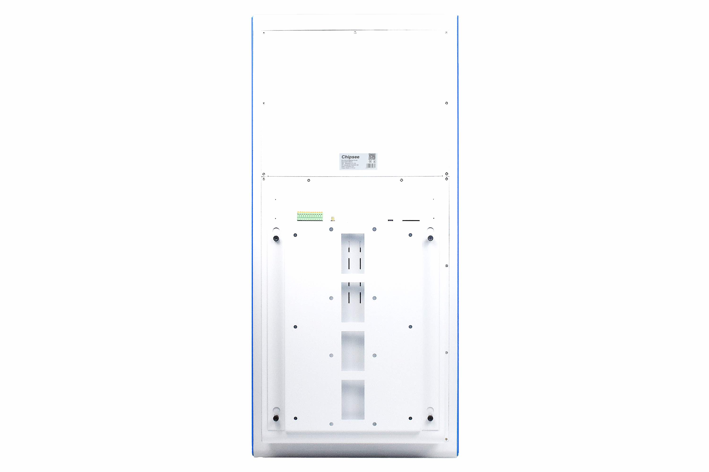
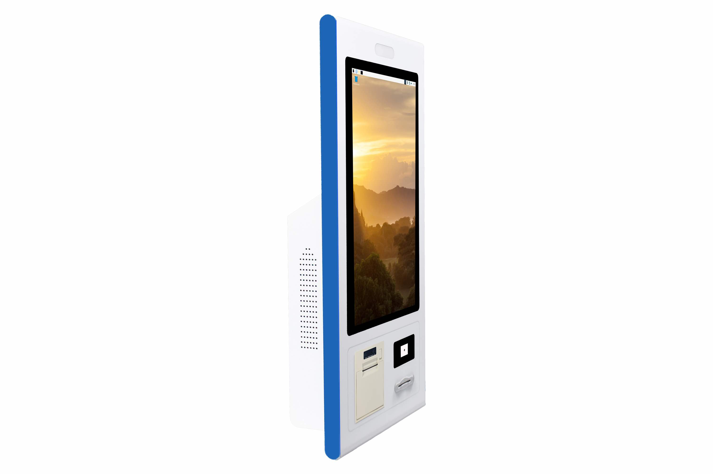
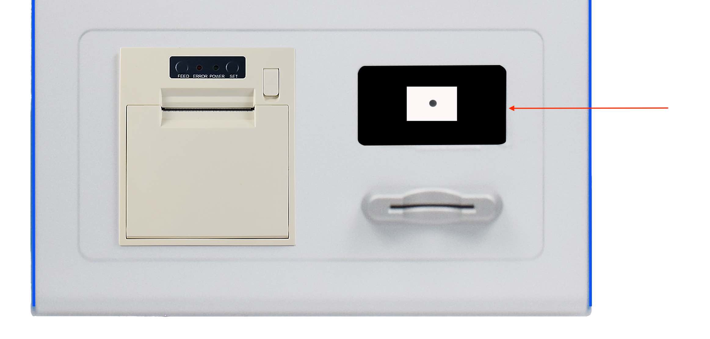
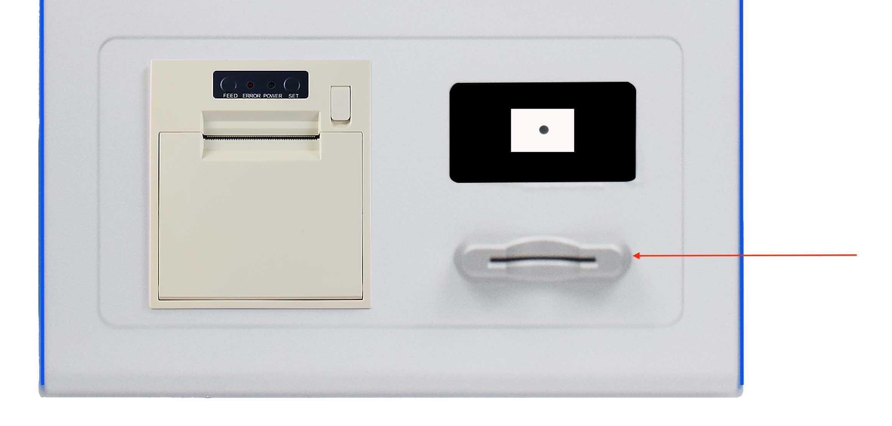

KIOSK-CM4-215¶


Product Overview¶
The Cortex®-A72 Raspberry Pi® series KIOSK-CM4-215 (PN: CS19108RA4215-KK) is a high-quality KIOSK product. It features a 21.5” ten-point(single point in Raspberry Pi OS) capacitive touch screen with a resolution of 1920 x 1080 pixels and brightness of 500 cd/m2.
The KIOSK-CM4-215 industrial Pi Kiosk is based around the powerful Raspberry Pi® Compute Module 4, powered by the Quad Cortex®-A72 processor with a processor speed of 1.5GHz.
Ordering Options¶
Chipsee products can be customized during the ordering process. The product will be shipped with the pre-installed factory defaults if no extra requirements are specified. The table in the Specifications section provides information about the default options bundled with the product.
Note
You can order KIOSK-CM4-215 from the official Chipsee Store or from your nearest distributor.
Pi® CM4 Module¶
The Pi® Compute Module 4 appears in different versions depending on the size of the DDR4 and eMMC.
The KIOSK-CM4-215 industrial Pi Kiosk does not include the CM4 Raspberry Pi® module by default. If you would like to purchase it with a CM4, you can select it at the Chipsee store during the ordering process.
Operating System¶
This product comes with a pre-installed Raspberry Pi OS. Chipsee software engineers have created all the drivers, so every hardware feature is readily available for any standard development tool.
If your project requires a different OS, please Contact us, and we’ll make a customized version that suits your needs.
Optional Features¶
The KIOSK-CM4-215 industrial Pi Kiosk does not include the 3G/4G/LTE modules by default. These modules are optional and can be selected at the Chipsee store during the ordering process.
Warning
Specifications¶
The KIOSK-CM4-215 industrial Pi Kiosk offers a broad range of performance and connectivity options for scalable integration, providing expandability according to future needs. Some of the key features are listed in the table below.
KIOSK-CM4-215 |
|
|---|---|
CPU |
Raspberry Pi® CM4; Quad Cortex-A72 at 1.5GHz |
Storage |
Support for 1 x TF Card3 |
RAM |
2/4/8 GB, Based on CM4 |
eMMC |
16/32 GB, Based on CM4 |
Display |
21.5” IPS LCD, 1920 x 1080 resolution, brightness 500 cd/m2 |
Touch |
10-point capacitive touch with 3mm tempered glass, single point touch in Raspberry Pi OS Software |
USB |
2 x USB 3.0 Host, 1 x USB OTG |
LAN |
1 x Giga LAN |
Audio |
3.5mm Audio Out Connector, 2W Speaker Internal |
Buzzer |
Onboard Buzzer, driven by GPIO |
RTC |
High accuracy RTC with farad capacitor, can work 1 week after power off (default). High accuracy RTC with lithium coin battery, can work 3 years after power off (optional). |
RS232 |
Default to 2 x RS232, up to 4 x RS232 |
RS485 |
Default to 2 x RS4851, these 2 x RS485 can be configured as 2 x RS232 |
CAN |
1 x CAN-BUS |
GPIO |
8 Channels, 4 Input, 4 Output |
I2C |
Not Supported |
WiFi/BT |
Supported but depending on the CM4 selected2 |
ZIGBEE |
Not supported |
HDMI |
Not Supported |
SATA II |
Not Supported |
3G/4G/LTE |
Supported, not mounted by default |
Camera |
No |
Power Input |
100-240V AC 50/60Hz |
Current |
Less than 1.5A |
Power Consumption |
33W Typical, 45W Maximum |
Working Temperature |
From 0°C to +50°C |
OS |
Raspberry Pi OS |
Dimensions |
KIOSK-CM4-215: 826 x 380 x 138mm |
Weight |
KIOSK-CM4-215: 16.6kg |
Mounting Method |
Rear Mount |
- 1
The RS485 circuit controls the Input and Output direction automatically, there’s no need to control it from within the software.
- 2
The default product without the CM4 does not include a Wi-Fi/BT module. You can include a CM4 that has the Wi-Fi/BT module at the Chipsee store during the ordering process.
- 3
This TF card is designed for storage expansion, as the TF card uses the same pins with WiFi, it can’t be used with WiFi at the same time
{kind=link}
Interfaces of the Product
Label |
Interface |
|---|---|
A |
Power |
B |
Power Switch |
C |
PROG Button |
D |
Status LED |
E |
4G/LTE Antenna |
F |
Ethernet |
G |
USB3.0 HOST |
H |
USB-C OTG |
I |
Audio Jack |
J |
WiFi/Bluetooth Antenna |
K |
SIM Card Slot |
L |
TF Card Slot |
M |
RS232/485 CAN GPIO |
Table: Interfaces

Printer, Barcode Scanner, Smart Card Reader
Label |
Interface |
Model |
|---|---|---|
A |
Barcode Scanner |
LR1008 1D and 2D barcode scanner |
B |
Smart Card Reader |
RCR-2913 hybrid dual interface (contact and contactless) smart card reader |
C |
Label Printer |
SPRT SP-RMD17 58mm thermal label printer |
Table: Printer, Barcode Scanner, Smart Card Reader
Label Printer¶
The KIOSK-CM4-215 industrial Pi Kiosk features a thermal label printer (SPRT SP-RMD17).
{kind=link}
Thermal Label Printer
Printing Performance
Printing Method: Thermal Printing
Paper Width: 57.5±0.5mm
Printing Density: 8 dots/mm, 384 dots/line
Printing Speed: 70mm/second (maximum)
Reliability: Printhead Lifespan - 60km
Usage Conditions:
Print 12 × 24 Western characters, 50 lines per print, intermittently repeat printing
Simultaneous printing of each dot line does not exceed 25%, no more than 11 vertical repetitions of the same point for each character line
Use specified thermal paper
Effective Printing Width: 48mm
Printing Paper
Thermal Paper Roll Model:
TF50KS-E (Japan Paper Co. Ltd.)
AF50KS-E (Jujo Thermal)
Thermal Paper Roll:
Paper Width: 57.5±0.5mm
Outer Diameter: φ60mm (maximum)
Inner Diameter: φ13mm±0.3 (minimum)
Paper Thickness: 0.06mm~0.08mm
Printer Control Commands
Character Printing Commands: Supports printing of ANK characters, custom characters, with adjustable character line spacing.
Dot Matrix Printing Commands: Supports printing of dot matrix graphics with different densities and downloaded graphics.
GS Barcode Printing Commands: Supports printing of UPC-A, UPC-E, EAN-13, EAN-8, CODE39, ITF25, CODABAR, CODE93, CODE128 barcodes.
Barcode Scanner¶
The KIOSK-CM4-215 industrial Pi Kiosk features a barcode scanner:
{kind=link}
Barcode Scanner (Customized)
The scanner module utilizes a specialized image processing chip for barcode recognition, enabling fast and stable code reading even in complex environments.
It supports reading one-dimensional(1D) and two-dimensional(2D) codes on various media such as paper, screens, and plastics.
Triggering Methods: Automatic sensing, continuous reading, command triggering
Camera: 1.3MP 720p
Scanning Angle: Tilt angle ±85°, rotation 360°
Supported Barcode Types:
1D codes: UPC-A, UPC-E, EAN-13, ISBN10, ISBN13, EAN-8, CODE39, CODE 11, CODE 93, CODE128, INTERLEAVED25, INDUSTRIAL25, MATRIX25, S25, CODE 32, TRIOPTIC39, GS1_128, CODABAR, MSI, China Post code, TELEPEN, RSS, GS1_DATABAR, GS1_DATABAR_LIM, GS1_DATABAR_EXP;
2D codes: QR, MICROQR, PDF417, Data Matrix
Reading Distance: 5cm ~ 20cm
Smart Card Reader¶
The KIOSK-CM4-215 industrial Pi Kiosk features an RCR-2913 hybrid dual interface (contact and contactless) smart card reader
The RCR-2913 smart card reader supports hybrid dual interface contact(ISO-7816) and contactless(ISO-14443) card reading.
It is a powerful and efficient dual interface smart card reader that can be used to access ISO 7816 MCU cards, MIFARE® cards and ISO 14443 Type A and B contactless cards.
{kind=link}
Smart Card Reader (Contact and Contactless)
Power Input¶
The KIOSK-CM4-215 industrial Pi Kiosk power input is 100-240V AC 50/60Hz. As shown in the figure below.
{kind=link}
Power Input
Touch Screen¶
The KIOSK-CM4-215 industrial Pi Kiosk uses a 10-point capacitive touch with 3mm tempered glass, single point touch in Raspberry Pi OS Software screen. However, the Raspberry Pi OS supports only One-Point touch.
The figure below shows the capacitive touch screen connected to the motherboard via the USB connector.

Capacitive Touch Connector
Connectivity¶
There are many connectivity options available on the KIOSK-CM4-215 industrial Pi PC. It has 2 x USB 3.0 Host, 1 x USB OTG, 1 x Giga LAN (RJ45) Ethernet connector supporting up to 1 Gbps, and 4 x UART and 1 x CAN terminals (RS232/RS485/CAN).
RS232/RS485/CAN¶
The serial communication interfaces (RS485, RS232, and CAN) are routed to a phoenix terminal, as illustrated in the figure below.

RS232-RS485-CAN on the KIOSK-CM4-215 Industrial PC
Attention
RS485_3 and RS485_5 can control the input and output direction automatically. There’s no need to control it from within the software.
The 120Ω match resistor for RS485 is already mounted by default.
The 120Ω match resistor for CAN is NOT mounted by default. Be sure to mount the match resistor when testing CAN.
The 2 x RS485 can be configured to 2 x RS232, if you want a custom configuration, you can contact us when placing an order.
The table below offers more detailed description of every pin and its definition:
RS232 / RS485 / CAN Pin Definition: |
||
|---|---|---|
Pin Number |
Definition |
Description |
Pin 1 |
CAN_H |
CAN BUS “H” signal |
Pin 2 |
CAN_L |
CAN BUS “L” signal |
Pin 3 |
RS485_5- |
CPU UART5, RS485 –(B) signal |
Pin 4 |
RS485_5+ |
CPU UART5, RS485 +(A) signal |
Pin 5 |
RS485_3- |
CPU UART3, RS485 –(B) signal |
Pin 6 |
RS485_3+ |
CPU UART3, RS485 +(A) signal |
Pin 7 |
RS232_2_RXD |
CPU UART2, RS232 RXD signal |
Pin 8 |
RS232_2_TXD |
CPU UART2, RS232 TXD signal |
Pin 9 |
RS232_0_RXD |
CPU UART0, RS232 RXD signal |
Pin 10 |
RS232_0_TXD |
CPU UART0, RS232 TXD signal |
Pin 11 |
GND |
System Ground |
Pin 12 |
+5V |
System +5V Power Output, No more than 1A Current output |
GPIO Port¶
The KIOSK-CM4-215 industrial Pi Kiosk has a phoenix connector, as shown in the figure below. The table below gives details about the definition of every Pin.
Attention
In order to use the Isolated Output, you need to add an external Isolated Power to the VDD_ISO and GND_ISO. The power voltage should not exceed 24V.
The output current can achieve 500mA for every channel, but it also depends on the isolated power that is connected.
In order to use the Isolated Input, you need to add a signal to the ISO_InputX and GND_ISO. A 2.4KΩ resistor, as R6, has been added to limit the input current, as shown in the figure below. This resistor should work well for the 5-24V input signal. If your input signal is less than 5V, please change this input resistor. The reduced schematic is for reference purpose, if you need the precise resistor schematic, please contact us.

Isolated GPIO reduced schematic
{kind=link}
GPIO Connector
GPIO Connector Pin Definition: |
||
|---|---|---|
Pin Number |
Definition |
Description |
Pin 12 |
24V_ISO |
Isolated Power +24V Input |
Pin 11 |
GND_ISO |
Isolated Ground |
Pin 10 |
OUT1 |
Isolated Output 1 |
Pin 9 |
OUT2 |
Isolated Output 2 |
Pin 8 |
OUT3 |
Isolated Output 3 |
Pin 7 |
OUT4 |
Isolated Output 4 |
Pin 6 |
IN1 |
Isolated Input 1 |
Pin 5 |
IN2 |
Isolated Input 2 |
Pin 4 |
IN3 |
Isolated Input 3 |
Pin 3 |
IN4 |
Isolated Input 4 |
USB Connectors¶
There are 2 x USB 3.0 Host, 1 x USB OTG onboard, as shown in the figure below.
{kind=link}
USB HOST Connectors
Attention
1. These two USB host connectors can drive 500mA for each channel at most.
The product has one USB Type-C OTG connector that works as a slave by default. You can use it to establish a connection with the host PC and for downloading the system to the eMMC of CM4 module.
{kind=link}
USB Type-C OTG Connector
Warning
Be careful not to touch surrounding electronic components accidentally while plugging in USB devices into the embedded Industrial PC version.
Remember to unplug the Type-C cable after flashing OS, otherwise the USB hosts won’t work.
LAN¶
The 1 x Giga LAN provides Ethernet connectivity over standardized Ethernet cables as shown in the figure below. The integrated Ethernet interface supports up to 1 Gbps data throughput. These Giga LAN signals come from the CM4 module directly.
{kind=link}
RJ45 LAN Connector
Note
Use CAT5 or better cables to achieve full data throughput over maximum distance defined by the 1000BASE-T standard (100m).
WiFi & BT Module¶
The default KIOSK-CM4-215 without the CM4 does not include a Wi-Fi/BT module.
If you buy a CM4 that has the Wi-Fi/BT module, the product will have Wi-Fi/BT feature.
By default the kiosk doesn’t ship with WiFi antenna SMA, nor is there a drill hole. But if you buy the CM4 with Wi-Fi/BT module from us or contact us when placing an order, we can drill hole on the kiosk and install the antenna SMA for you.
{kind=link}
WiFi+BT Antenna
Attention
The product does not come shipped with the Wi-Fi/BT module by default.
3G/4G/LTE Module¶
The KIOSK-CM4-215 industrial Pi Kiosk is equipped with a mini-PCIe connector that can connect to a 3G/4G/LTE module. The customer will also need a SIM Card Holder and a 3G/4G/LTE antenna to ensure 3G/4G/LTE works on the KIOSK-CM4-215. SIM card does NOT support hot plug. Power off before inserting or removing SIM card.
{kind=link}
SIM Card Direction

Figure 989: 3G/4G/LTE Module¶

Figure 990: SIM Card Holder and 3G/4G/LTE Antenna¶
Attention
The product does not come shipped with the 3G/4G/LTE module by default. If you need to use 3G/4G/LTE, you can contact us when placing an order, we can install the necessary hardware for you.
{kind=link}
4G Antenna
TF Card Slot¶
The KIOSK-CM4-215 industrial Pi Kiosk features 1 x TF Card (micro SD) slot. A slot can address up to 128GB of memory.
{kind=link}
TF (micro SD) Card Slot
Attention
The SD is used for memory extension. It can’t be used for system boot-up.
This storage extension SD uses the same pins as WiFi on CM4. SD storage and WiFi can’t be used at the same time.
The product does not come shipped with the TF card by default.
Audio Connectors¶
The KIOSK-CM4-215 industrial Pi Kiosk features some audio peripherals. It has 1 x 3.5mm audio output jack.
Also, the KIOSK-CM4-215 industrial Pi PC has a miniature 2W internal speaker for audio reproduction, as well as a small buzzer for alarm/notification sounds.
{kind=link}
Audio Connector
Attention
By plugging in the headphone cable, the internal speaker will be disabled automatically.
{kind=link}
Mechanical Specifications¶
KIOSK-CM4-215¶
For KIOSK-CM4-215, the outer mechanical dimensions are 826 x 380 x 138mm (W x L x H).
{kind=link}
Technical Drawing
Disclaimer¶
This document is provided strictly for informational purposes. Its contents are subject to change without notice. Chipsee assumes no responsibility for any errors that may occur in this document. Furthermore, Chipsee reserves the right to alter the hardware, software, and/or specifications set forth herein at any time without prior notice and undertakes no obligation to update the information contained in this document.
While every effort has been made to ensure the accuracy of the information contained herein, this document is not guaranteed to be error-free. Further, it does not offer any warranties or conditions, whether expressed orally or implied in law, including implied warranties and conditions of merchantability or fitness for a particular purpose. We specifically disclaim any liability with respect to this document, and no contractual obligations are formed either directly or indirectly by this document.
Despite our best efforts to maintain the accuracy of the information in this document, we assume no responsibility for errors or omissions, nor for damages resulting from the use of the information herein. Please note that Chipsee products are not authorized for use as critical components in life support devices or systems.
Technical Support¶
If you encounter any difficulties or have questions related to this document, we encourage you to refer to our other documentation for potential solutions. If you cannot find the solution you’re looking for, feel free to contact us. Please email Chipsee Technical Support at support@chipsee.com, providing all relevant information. We value your queries and suggestions and are committed to providing you with the assistance you require.